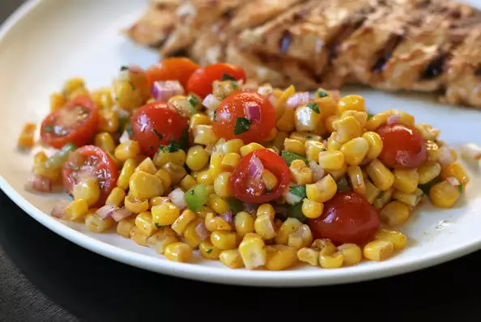

Zesty Corn Salad

Description
Easy and delicious, this salad is refreshing with your summer grilled dishes.
Ingredients
- 2 (16 ounce) packages frozen corn, thawed and drained
- 1.5 cups cherry tomatoes, halved
- 2 tablespoons red wine vinegar
- 3 tablespoons freshly chopped cilantro
- 0.25 cup olive oil
- 0.33 cup diced red onion
- 0.5 cup diced green bell pepper
- 2 tablespoons fresh lime juice
- 1 teaspoon chili powder
- 1 teaspoon ground cumin
- 1 teaspoon garlic powder
- ½ teaspoon cayenne pepper
Steps
- Combine corn, tomatoes, bell pepper, and onion in a large bowl.
- Whisk olive oil, cilantro, vinegar, lime juice, chili powder, cumin, garlic powder, and cayenne together in a small bowl. Add dressing to corn mixture just before serving and toss well.